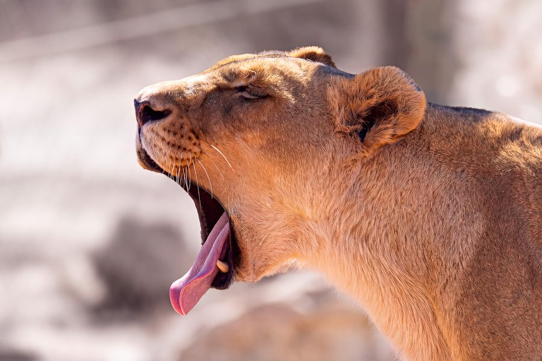
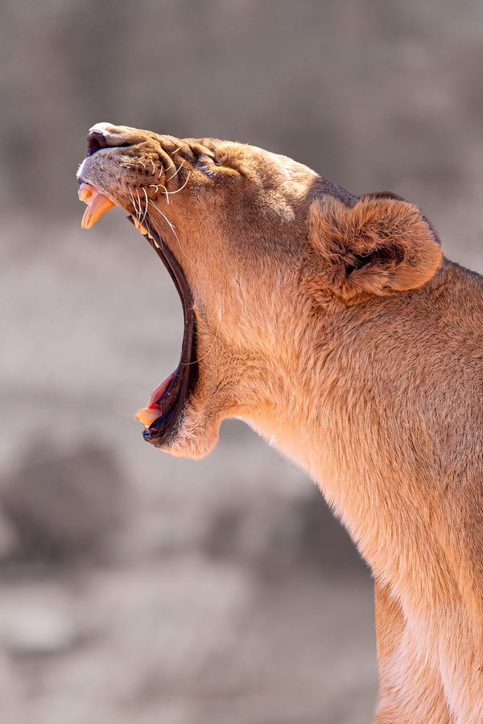
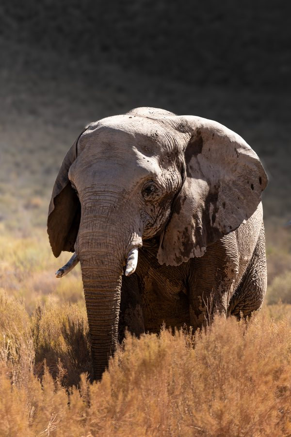
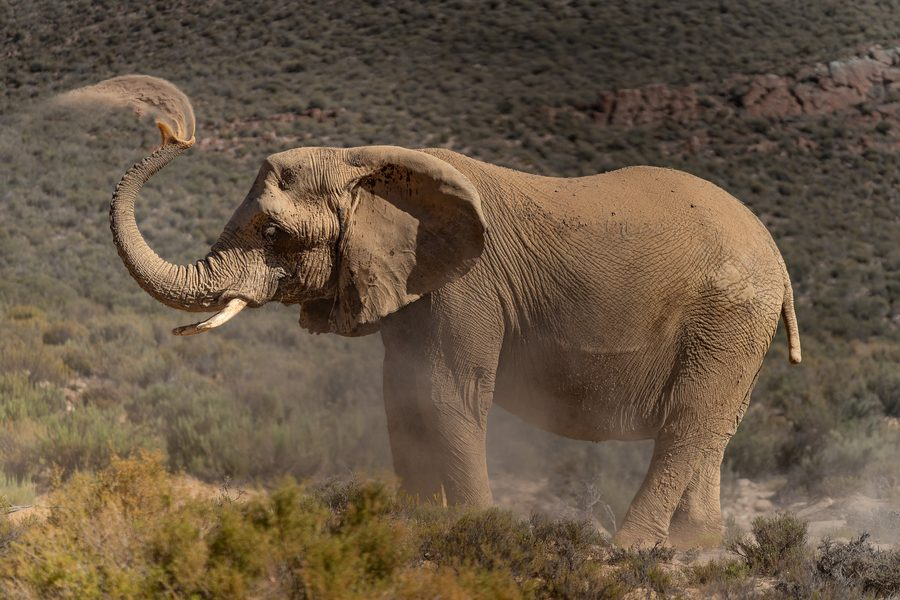
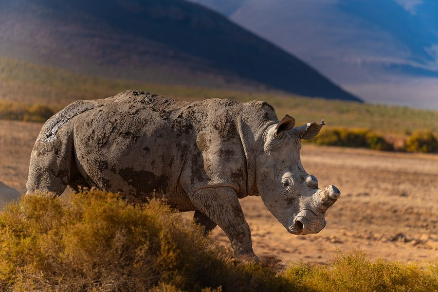
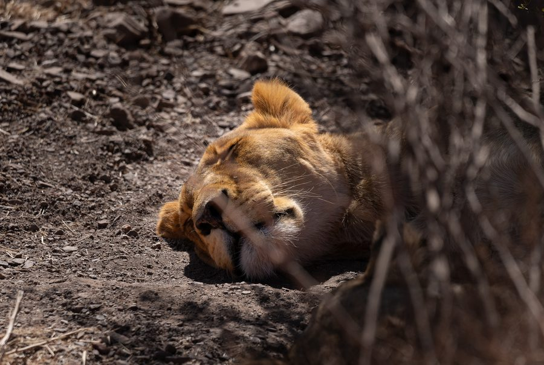
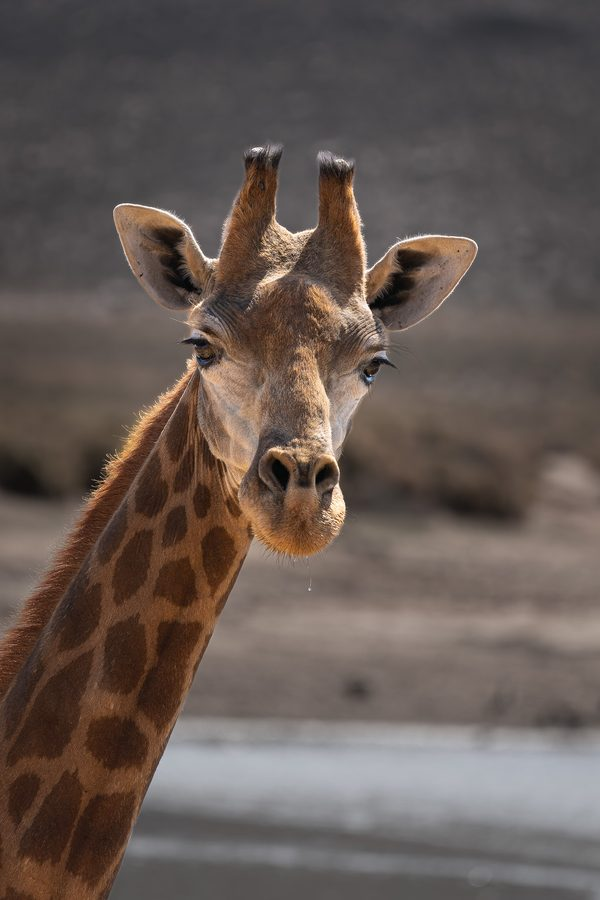

Home / Fine art gallery
- CPT
- Cape Town stopover
- 10 January 2026
- 7 photographs
Wild Souls of Aquila
Wildlife photography in the Karoo, South Africa
Two hours' drive from Cape Town, Aquila Private Game Reserve stretches across the mountains and valleys of the Karoo. Lions, elephants, rhinos and giraffes live here in a semi-arid landscape of fynbos and golden grasses.
Each image seeks not so much the animal as its character: a lazy yawn, an unhurried stride, an ancient gesture repeated beneath the sun.
These photographs were taken on 10 January 2026, on a day like no other: my friend Benjamin had joined me in Cape Town, and we shared this safari together.

Lazy AfternoonWild souls of Aquila-7
Queen of the KarooWild souls of Aquila-8
The WandererWild souls of Aquila-6
Dust DanceWild souls of Aquila-5
Mud & MountainsWild souls of Aquila-4
Midday DreamsWild souls of Aquila-3
The Gentle GazeWild souls of Aquila-1